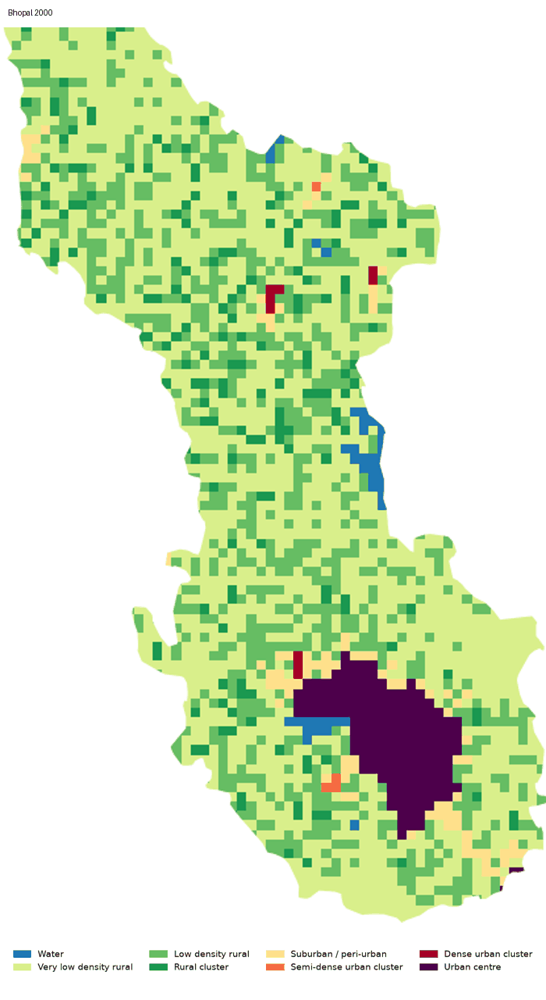
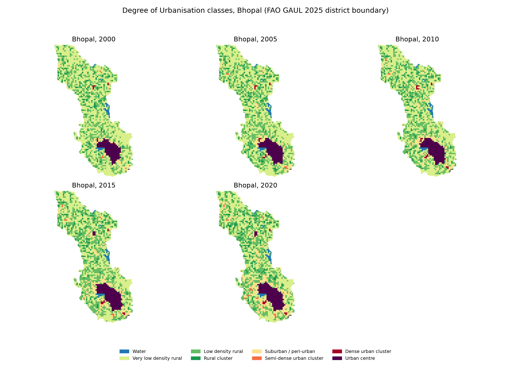

HS524M · Question 2 · Google Earth Engine urban analysis
Bhopal's suburban fringe grew 4.5 times in twenty years.
Using JRC Global Human Settlement Layer data, this page tracks how the Degree of Urbanisation classes and population changed inside the Bhopal district between 2000 and 2020.
The change over time
Each frame uses the same extent, colours and legend, so the classes can be compared directly.

Where the classes sit
The five-panel view shows the full sequence at once.

Area by class
| Class | 2000 (km²) | 2020 (km²) | Change (%) |
|---|---|---|---|
| Very low density rural | 1543.07 | 1051.88 | −31.8 |
| Low density rural | 765.30 | 865.85 | +13.1 |
| Rural cluster | 170.87 | 228.85 | +33.9 |
| Suburban / peri-urban | 75.64 | 340.50 | +350.1 |
| Semi-dense urban cluster | 3.66 | 16.45 | +349.9 |
| Dense urban cluster | 7.30 | 9.15 | +25.3 |
| Urban centre | 167.76 | 221.83 | +32.2 |
| Water | 32.92 | 32.01 | −2.8 |
Grew from 75.64 to 340.50 km² between 2000 and 2020.
Lost 491.19 km² over the same period.
Changed by less than 1 km², so it is not a driver of change.
Population
| Year | Total | Urban centre | Suburban | Suburban area (km²) |
|---|---|---|---|---|
| 2000 | 18,713 | 14,816 | 672 | 75.64 |
| 2005 | 21,208 | 16,719 | 760 | 101.55 |
| 2010 | 23,918 | 18,666 | 1,298 | 176.34 |
| 2015 | 26,908 | 21,663 | 1,698 | 223.00 |
| 2020 | 30,211 | 23,936 | 2,416 | 340.50 |
Download population by class (CSV)
Population is a modelled estimate from GHSL, not a census count. People per km² in the urban centre rose from 88.3 to 107.9, and in the suburban class it fell from 8.9 to 7.1.
Discussion
The urban centre was the largest urban class in 2000, covering 167.76 km². By 2020 the suburban / peri-urban class had grown larger than it, reaching 340.50 km² against 221.83 km² for the urban centre. Over the same period, very low density rural land fell by 491.19 km² (−31.8%), while low density rural (+100.55 km²) and rural cluster (+57.99 km²) both increased. These are net figures, so they show how much each class changed, not where the change happened.
The population table shows that most people in the district live in the urban centre. It held 14,816 of 18,713 people in 2000 (about 79%) and 23,936 of 30,211 in 2020 (also about 79%). Its density rose from 88.3 to 107.9 people per km², while the total population increased by about 61%.
The suburban class shows a different pattern. Its area grew about 4.5 times, from 75.64 to 340.50 km², but its population grew about 3.6 times, from 672 to 2,416 people. Its average density therefore fell from 8.9 to 7.1 people per km², which suggests that population has spread across a larger suburban area more thinly than before.
These results have limits. The 1 km grid cannot separate small settlements from the land around them, and the population values are modelled estimates rather than census counts. The FAO GAUL 2025 boundary is a district, so the totals include rural land outside the city. The data cannot show why people moved.
Limitations
- The 1 km grid is coarse, so small settlements and narrow roads can be merged into larger classes.
- The FAO GAUL 2025 boundary is a district, which includes areas outside the built city.
- Population is a modelled estimate, and the 100 m data was aggregated to 1 km.
- GHSL epochs are estimates, so the timing of change within each five-year interval is uncertain.
Sources
- European Commission, Joint Research Centre. GHSL: Degree of Urbanization 1975–2030 V2-0 (P2023A),
JRC/GHSL/P2023A/GHS_SMOD_V2-0. Google Earth Engine Data Catalog. - European Commission, Joint Research Centre. GHSL Population (P2023A),
JRC/GHSL/P2023A/GHS_POP. Copy the citation from the Earth Engine catalogue page. - FAO. Global Administrative Unit Layers 2025, level 2,
FAO/GAUL/2025/level2. Copy the citation from the Earth Engine catalogue page.